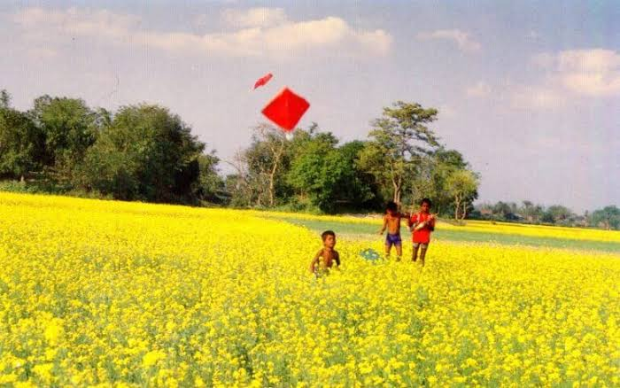
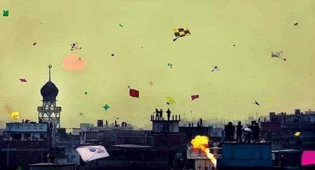

Kite Flying & Shakrain (ঘুড়ি উড্ডয়ন ও সাকরাইন)
An ancient aerial sport of technical precision, spatial defense, and communal celebration across rural fields and Old Dhaka's historic rooftops.
Overview & Cultural Significance
Kite flying (Ghuri Uddeon) is a timeless folk culture in Bangladesh that bridges rural agricultural post-harvest leisure with vibrant urban festival traditions. The sport relies on specialized kite-crafting techniques passed down through generations, combining structural physics, aerodynamics, and competitive maneuvering.
Beyond individual recreation, kite flying fosters communal social bonds. In village settings, it serves as an autumn open-air celebration, while in urban centers—particularly Old Dhaka—it evolves into Shakrain (Poush Sankranti), a grand cross-cultural festival uniting people across religions, professions, and generations.
Historical Lineage & Nawabi Heritage
Globally, kite flying is believed to have originated in China nearly 2,800 years ago before spreading throughout Asia (Bangladesh, India, Japan, Korea) and Europe.
In Bangladesh, the tradition was elevated during the Mughal era for elite entertainment. Around 1740, under Naieb Nazim Nawazesh Mohammad Khan, kite flying became an established urban tradition in Dhaka. Influenced by Lucknow's courtly Patangbaji culture, patronage from local Nawabs—including Ghaziuddin ('Pagla Nawab') and the Ahsan Manzil royal family—fueled annual winter competitions (Harifi or Harif) held across open grounds like Chawkbazar, Shahbagh, Paltan Maidan, and Armanitola.
The urban festival name Shakrain derives from the Sanskrit word Sankramana (meaning a special transition moment). Traditionally marking Makar Sankranti (Vastu Puja hospitality under historical zamindars), the day evolved into Dhaka's signature kite and winter festival.
Technical Specifications & Equipment
| Kite Frame & Body | Thin tissue or oiled paper built over flexible bamboo splits or sturdy wood sticks. Modern variants utilize synthetic fabrics. |
|---|---|
| Dimensions | Ranges from small fast flyers to large crafts up to 6 feet in length and 4 feet in diameter. |
| Manja (Abrasive Thread) | Cotton thread hand-coated in open fields with a mixture of boiled glue, finely ground glass powder, and organic dye to enable line-cutting during flight. |
| Natai (Spool) | Wooden or bamboo spindle used to store, release, and swiftly manipulate string tension during line combat. |
Play Dynamics: Rural vs. Urban Contexts
1. Rural Bengal (Autumn Open-Field Flying)
In rural areas, villagers choose the clear skies and steady breezes of autumn for kite flying. Flown in open harvested fields, rural flying focuses on altitude endurance, structural design showcase, and informal neighborhood duel games.
2. Urban Old Dhaka (Shakrain Rooftop Festival)
In Old Dhaka, the sport culminates on the last day of the Bengali month of Poush (Poush Sankranti / Shakrain). Thousands take to packed rooftops. The atmosphere shifts dynamically: day-long string-cutting battles give way in the evening to traditional culinary feasts (khichuri, beef, pithe-puli), night-sky lantern releases (fanush), fireworks, and live fire-spinning shows.
Gameplay Mechanics & Competitive Modes
- Katakati (String-Cutting Duel): Competitors launch nearby kites, charging toward each other to entangle strings. By manipulating line speed and tension, one flyer cuts the opponent's manja line.
- Vhokatta & The Catch Pursuit: When a kite's line is severed, it goes vhokatta (cut free and drifting). Young spectators engage in a thrilling ground chase; whoever retrieves the fallen kite gains ownership of it.
- Altitude & Endurance Trials: Competitors test aerodynamic balance to see who can hoist their craft highest into upper sky currents.
- Aesthetic & Structural Judging: Formal competitions evaluate craftsmanship, scale, ornamentation, and flight stability.
Taxonomy & Varieties of Craft
Kites in Bengal are categorized into stringed (tethered) and stringless aerial crafts:
| Category | Type / Name | Design & Operational Characteristics |
|---|---|---|
| Stringed Kites | Classic Regional Names | Sapa, Potenga, Dhol Ghuri, Feichka, Goa Ghuri, Petkata, Chumki, Projapoti. |
| Chong / Manush Chong | Trapezoidal design. Manush Chong resembles a human figure; lit torches are attached to its hands during night flights to simulate a glowing, moving figure. | |
| Dhaush / Chili / Dhop | Massive oval-shaped heavy-duty craft (resembling an eagle). The Dhop variant is a 3D craft that maneuvers like a jet plane. | |
| Urojahaj Ghuri | Airplane-shaped high-altitude kite requiring heavy-duty cordage. | |
| Stringless Crafts | Fanush (Sky Lantern) | Large paper balloon with a bamboo ring mouth holding an oil-soaked cloth torch. Rises via hot air and floats for miles during night celebrations. |
| Haui | Folk sky-rockets and fire-propelled aerial displays. |
Visual Archive & Festival Gallery

